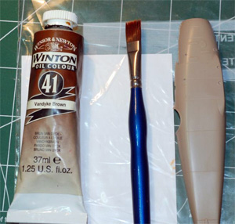

How to get Wood
Or
Painting Wood with Oils
Images and text Copyright © 2009 by Mark Therrell
Replicating wood is one of those feared tasks in modeling that many try to avoid at all costs. I was guilty of this myself but after learning a few tricks from other builders and changing things that works for me I now find it one of the easier things to do. This is how I do it.
The first thing you need to do is get the proper tools. You’ll need a wide and flat good quality paint brush, a paint pallet (I use an index card inside a plastic bag), a brown oil paint of your choice, and the model itself.
Since oil paints take so long to dry it is nice to have one or both of the following.
A drying box, which in my case is nothing more than a cardboard box lined with aluminum foil and a 60 watt bulb stuck under it or some Japan Drier. The use of one or both of these will cut your drying time down greatly. I no longer use the Japan Drier but its there if you choose to do so.

Start by painting your subject with a brown or tan shade of acrylic paint. Oils will eat through other paints so if you use enamel you will need to coat it with Future before going to the oils. Plastic that is molded in a brown or tan color such as Eduard kits will not need an acrylic brown. You can forego that step and move right in with the oils. The first thing to remember when working in oils is a little bit goes a long way. Start off by putting just a little bit of paint on the end of your brush.
Now all you have to do is simply paint it onto the plastic. Keep the brush strokes going in one direction and don’t worry about leaving brush strokes. You want them there for the wood grain.
When the paint starts getting too thin simply add more to your brush and move on to a different section of your model and continue doing so until you have everything painted you need.
After this is done, put your model in the drying box and it should be dry over night. If you opt for using a Japan drier instead of a light box your drying time will vary depending on your drier/paint ratio.
This next step is an optional one and one I still get somewhat mixed results with. This step is adding a second grain to your wood. After your first oil coat is dry, what you need to do is take a darker brown and paint little lines onto your first coat. A little oil goes a long way so be careful not to over do it here.
Now, simply take a clean, dry brush and lightly brush these lines out in the same direction as you put on the original oil color. The affect is faint here but that’s what you want. After this is done, put it back to dry again.
Finally for the last step, all of your oils are dry now and if you like the looks of it you can call it done. I like a good varnish look on mine so if you want a little more oomph to your wood coat it with a couple of light coats of clear yellow. I find the clear yellow also helps bring the second grain color out more.
When it comes to painting wood props the same steps are followed. I really lay the oils on thick for this and have yet to use a second color of brown. The thick coat of oils works just fine for my taste so maybe you will like it also. Everything here is done with only one color. The thickness of my coat is what gives it the look of a different shade.
That’s really all there is to it. Nothing hard and nothing original but it seems so much easier after seeing someone do it.